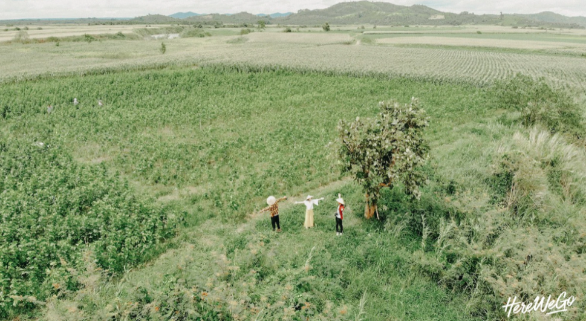
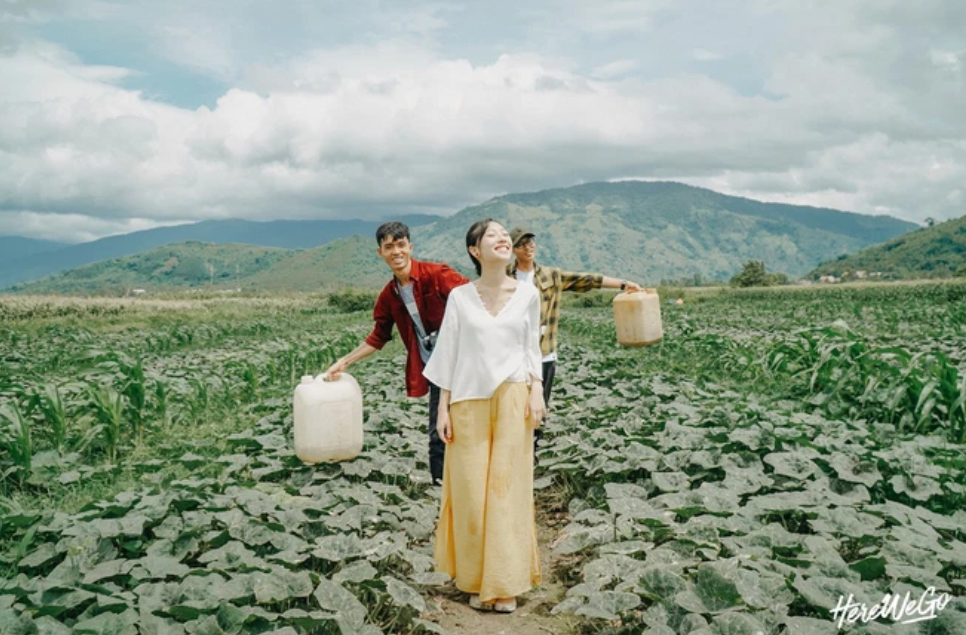
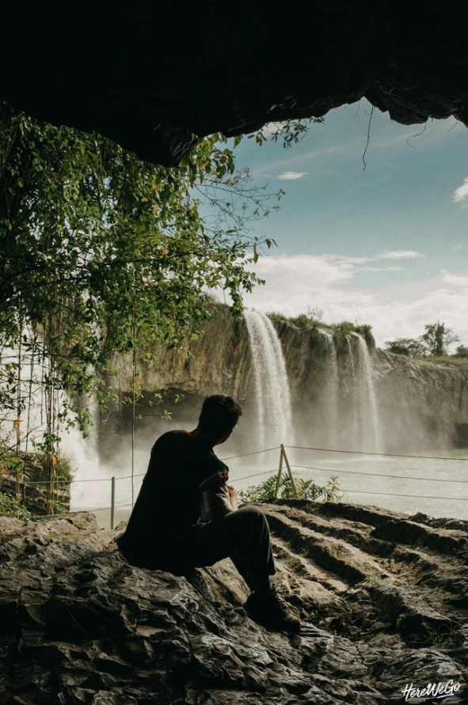
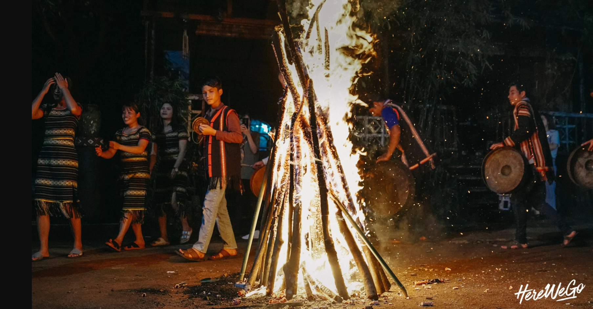

Dừng chân lại để lắng nghe hơi thở nơi đây
Bạn biết gì khi nhắc đến Tây Nguyên?
Một cao nguyên đầy nắng gió, mùi cafe thơm lẩn quất trong không khí,
những già làng móm mém cười hiền từ ngồi bên hiên nhà rông hay tiếng
cồng chiêng trầm ấm như một câu hát ngâm nga đưa ta lùi về quá khứ?
Đó là những gì chúng tôi cảm nhận về Tây Nguyên trước khi đến nơi này.
Rất ít. Dù chúng ta được đọc, được xem rất nhiều và có những ấn tượng
nhất định về Tây Nguyên - nhưng thực ra mọi thứ lại rất chung chung và
mơ hồ. Vậy nên, khi lá thăm mở ra và dòng chữ Tây Nguyên ngay ngắn xuất
hiện, trái tim chúng tôi đập nhanh hơn một nhịp. Sự hồi hộp khi biết
mình sắp khám phá một miền đất còn nhiều bí ẩn, sau đó là sự lo lắng len
lỏi khi nhận ra: Cả lũ… mù tịt về du lịch Tây Nguyên.
Khi ngồi đây và viết lại những dòng này, tôi nhắm mắt nhớ lại từng
khoảnh khắc trong chuyến đi, từng khung cảnh chúng tôi đã đi qua, những
ngọn núi, những triền đồi, những dòng sông, thác tung bọt trắng xoá,
những con đường đất đỏ trong cái nắng gió cao nguyên - trong lòng thật
sự trào dâng lên một cảm giác xúc động. Không phải chỉ vì chúng tôi đã
cùng nhau khám phá trọn vẹn một miền đất mà trước đấy mình mới chỉ nghe
tên, mà còn bởi chúng tôi đã thật sự cảm nhận được nhịp đập, được hơi
thở của con người và núi rừng Tây Nguyên rồi. Chúng tôi đã chạm vào được
phần nào vẻ đẹp kỳ vĩ và phóng khoáng của Tây Nguyên.
Chúng tôi chọn chuyến bay của VietNam Airlines, từ Đà Nẵng tới sân
bay Buôn Ma Thuột - xuất phát lúc 7h sáng. Tây Nguyên đón chúng tôi
với không khí se se, trời nhiều nắng nhưng gió hanh hao, mát mẻ -
trái ngược với suy nghĩ về một miền đất oi nóng trong tưởng tượng
trước khi đến đây.
Đón chúng tôi bằng sự niềm nở, chị kể về ngôi nhà của người Ê đê, về
hai chiếc cầu thang trước cửa nhà - một tượng trưng mẹ, một tượng
trưng cho cha. Chị kể rất nhiều điều về văn hoá, về cuộc sống của
người Ê đê, mà chúng tôi khuyên rằng nhất định bạn phải tới một đây
một lần và lắng nghe qua chất giọng trầm ấm ấy - bạn mới có thể cảm
nhận được màu sắc văn hoá Tây Nguyên qua một lăng kính gần gũi hơn
rất nhiều.
Buổi chiều, chúng tôi được một người bạn khuyên hãy ghé thăm hồ Lak,
thay vì chọn một vài điểm du lịch nổi tiếng và được khai thác triệt
để rồi. Ngay cả trên đường đi, chúng tôi cũng đã kịp dừng lại ở một
cánh đồng rộng lớn và bất ngờ trước một màu xanh trải dài bình yên
tít tầm mắt.
Là một khu du lịch còn rất hoang sơ, hồ Lak vắng vẻ, yên tĩnh, cảm giác
như thể chỉ có chúng tôi ở giữa nơi núi rừng này. Ngồi trên chiếc thuyền
độc mộc, thả mình trên dòng nước, nghe môt bản nhạc và phóng tầm mắt ra
xa - thấy một bên là nắng, một bên là mưa. Lúc đó, trong lòng tôi chợt
nghĩ: Không biết liệu có lần thứ 2, mình lại được ngắm nhìn cái khung
cảnh an yên mà tuyệt diệu này hay không?


Tìm đến Pleiku
Chúng tôi chọn ghé thăm Hồ T'nưng hay còn gọi là Biển Hồ. Đây là một
hồ nước ngọt nằm ở phía Tây Bắc thành phố Pleiku, tỉnh Gia Lai. Nơi
này nằm trên cao nguyên địa hình bằng phẳng, cao khoảng 500 m so với
mực nước biển. Đây vốn là miệng núi lửa khổng lồ, quanh năm đầy nước
và luôn xanh ngắt, bởi vậy nên Biển Hồ cũng được coi là viên ngọc
của Tây Nguyên.
Nằm trên bờ bắc Biển Hồ, cách thành phố Pleiku, Gia Lai khoảng 13km,
những đồi chè được hình thành từ khi người Pháp ở đây khoảng năm 20
thế kỉ trước. Chúng tôi đã ghé qua nơi này và buổi trưa, dạo khắp
các đồi chè để chụp ảnh và ngắm nhìn, trò chuyện với những người
nông dân ở đây. Lang thang giữa những đồi chè bạt ngàn, xanh mướt
trong ánh nắng vàng ruộm của cao nguyên - thật sự là một buổi chiều
đẹp, bình yên và đáng nhớ, mà có lẽ tôi sẽ chẳng bao giờ quên được
dù có du hành đến những miền đất xa xôi và kỳ vĩ nào đi chăng nữa.
Cánh đồng muối đẹp là thế nhưng có mấy ai biết rằng để có được từng
hạt muối trắng phau, diêm dân nơi này đã phải chịu nỗi vất vả thế
nào. Xe ba gác không chỉ chở đầy muối mà còn đầy ắp nỗi lo cơm áo
gạo tiền.


<
Cảm ơn Tây Nguyên đã rộng vòng tay đón chúng tôi vào lòng, để chúng tôi
được đắm mình trong sự hoang sơ và hùng vĩ của cao nguyên đất đỏ, để được
chu du qua những màu sắc văn hoá nồng ấm của xứ cồng chiêng, và để thấy
mình còn nhỏ bé biết nhường nào trước sự rộng lớn, đẹp đã và khôn cùng của
đất nước Việt Nam mình.
Tất cả những vẻ đẹp kỳ vĩ này, những dấu ấn văn hoá độc đáo này, sẽ mãi
tồn tại - nếu trái tim chúng ta dành một sự quan tâm và trân trọng chân
thành. Hãy ghé thăm Tây Nguyên, để không chỉ mở mang tầm mắt, mà còn để
những tiếng hát trong đêm lửa trại, tiếng cồng chiêng của các vị gìa làng
có thêm dịp được cất lên và vang mãi về sau.
Chào Tây Nguyên. Hẹn gặp lại với những trải nghiệm mới.
Đức, Thắng và Trang.
Quay về trang chính